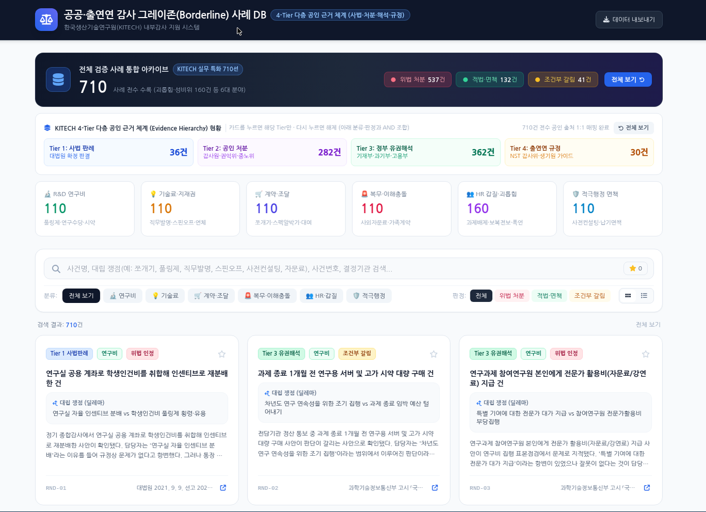
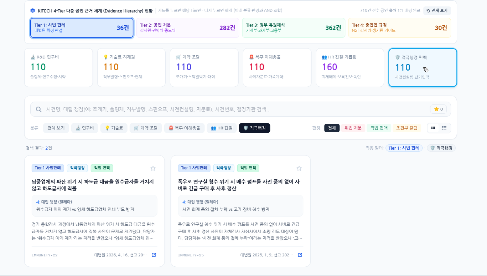
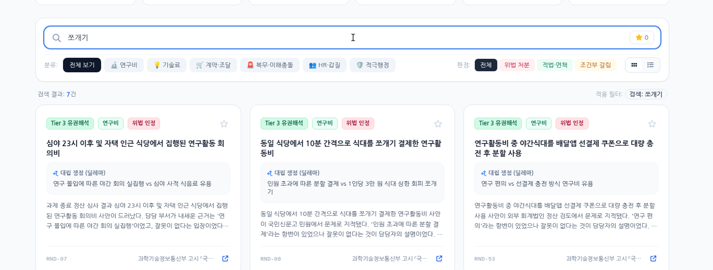
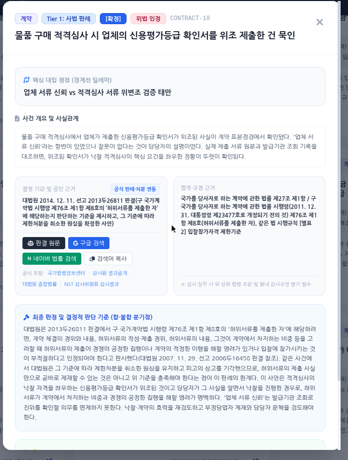
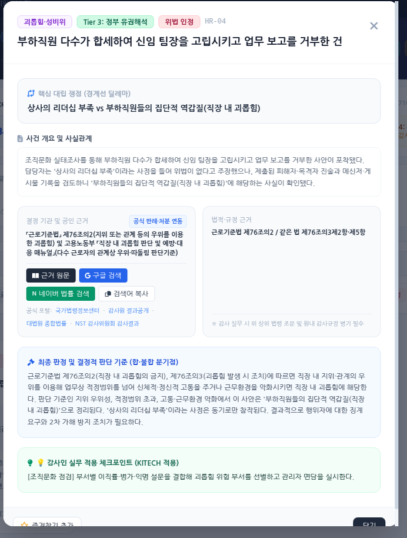

“이 사안, 처분해야 하나요, 면책해야 하나요?” — 판단이 갈리는 710건의 결론과 그 분기점을
검색 3초, 클릭 2번으로 확인하는 실무 안내서입니다.
쪼개기, 풀링제, 자문료, 사전컨설팅)공공기관과 정부출연연구기관 감사에서 “적발(위법 인정)”과 “적극행정(면책)” 사이에서 결론이 갈리는 사안만 모은 실무 사례 데이터베이스입니다. 총 710건이 수록되어 있고, 각 사례는 △대립 쟁점(딜레마) △사실관계 △최종 판정 △결정적 판단 기준 △감사인 실무 체크포인트 △공인 근거로 정리되어 있습니다.
| 최종 판정 | 건수 | 의미와 활용 |
|---|---|---|
| 위법 인정 | 538 | 감사에서 지적·처분으로 이어진 사안. “무엇이 문제였는지”를 확인해 사전 예방점검 항목을 뽑을 때 씁니다. |
| 적법 면책 | 132 | 문제가 제기됐지만 적법 면책으로 정리된 사안. “어디까지가 허용되는지”를 확인해 과잉 지적을 피할 때 씁니다. |
| 조건부 갈림 | 40 | 절차·증빙 보완 여부에 따라 결론이 갈린 사안. “무엇을 갖추면 되는지”를 뽑아 사전컨설팅 답변에 씁니다. |
같은 유형의 사안도 사실관계에 따라 결론이 갈립니다. 그래서 이 DB는 결론(처분/면책)보다 분기점을 먼저 읽도록 구성되어 있습니다.
모든 사례에는 공인 근거가 1:1로 붙어 있고, 근거의 성격에 따라 4개 등급(Tier)으로 나뉩니다. Tier가 높을수록(1에 가까울수록) 구속력과 설득력이 큽니다. 상단 배너의 카드에 표시되는 건수가 실제 수록 건수입니다.
| 등급 | 근거의 성격 | 건수 | 어디에 쓰나 |
|---|---|---|---|
| Tier 1: 사법 판례 확정·파기환송·1심 구분 |
법원 판결(대법원·고등법원·행정법원). 사안의 분기점을 직접 판시한 판례를 연결하고, 카드와 팝업에 [확정]·[파기환송]·[1심] 상태 배지를 달았습니다. | 34 | 가장 강한 근거. 감사조서·의견서에서 1순위로 인용. 34건 전부 [판결 원문] 버튼이 있어 법제처 국가법령정보센터의 판결 상세페이지로 바로 갑니다. 판결의 상태는 [확정] 10 · [파기환송] 22 · [1심] 2로 나뉘므로, 인용 전에 아래 배지 표를 보고 상태를 확인하세요. |
| Tier 2: 공인 처분 감사원·권익위·중노위 |
감사원 처분요구서, 국민권익위원회 의결례, 중앙노동위원회 판정례 등 준사법적 공인 처분. | 283 | 감사 실무와 결이 같은 처분례. 처분 수위·제재 판단의 근거로 인용. |
| Tier 3: 정부 유권해석 기재부·과기부·고용부 |
부처 고시·행정규칙, 부처 공식 질의회신 등 해석 기준. | 363 | 가장 많은 비중. 비목·집행 기준처럼 실무 규칙을 확인할 때 인용. |
| Tier 4: 출연연 규정 NST 감사위·생기원 가이드 |
NST 감사위원회 지적사례와 KITECH 내부규정·일상감사 체크포인트. | 30 | 건수는 적지만 우리 기관에 곧바로 적용되는 기준. 규정 위반 여부 판단에 사용. |
Tier 1 사법 판례 34건은 카드와 팝업에 그 판결이 어느 단계에서 어떤 상태로 남았는지를 배지로 함께 표시합니다. 같은 판례라도 확정된 판결과 하급심 판결은 인용의 무게가 다르므로, 결론을 인용하기 전에 이 배지를 먼저 확인하세요.
| 배지 | 건수 | 뜻 | 인용할 때 |
|---|---|---|---|
| [확정] | 10 | 상고기각 등으로 판결이 확정되어, 당사자에 대한 결론이 그대로 남은 판결입니다. | 결론까지 그대로 인용할 수 있는 가장 단단한 근거입니다. |
| [파기환송] | 22 | 대법원이 원심을 파기하고 사건을 하급심으로 돌려보낸 판결입니다. 판시한 법리(판단 기준)는 그대로 유효하지만, 그 사건의 최종 결론은 확정되지 않았습니다. | 법리·판단 기준은 인용하되 “대법원 파기환송 판결”임을 함께 적고, 당사자에 대한 결론은 인용하지 않습니다. |
| [1심] | 2 | 서울행정법원 등 1심(하급심) 판결입니다. | 논거로 쓸 수는 있지만 상급심에서 달라질 수 있으므로, 인용할 때 심급을 밝히고 후속 심급을 확인합니다. |
| 분야 | 건수 | 카드에 표시된 대표 이슈 |
|---|---|---|
| 연구비 | 109 | 풀링제 · 연구수당 · 시약 |
| 기술료 | 110 | 직무발명 · 스핀오프 · 연체 |
| 계약 | 110 | 쪼개기 · 스펙알박기 · 대여 |
| 복무·이해충돌 | 110 | 사외자문료 · 가족계약 |
| 괴롭힘·성비위 | 161 | 과제배제 · 보복전보 · 폭언 |
| 적극행정 | 110 | 사전컨설팅 · 납기면책 |
HR(괴롭힘·성비위) 분야만 161건으로, 나머지 다섯 분야(각 109~110건)보다 51건 더 많습니다. 성희롱·괴롭힘은 사안마다 결론이 갈리는 폭이 커서 참고할 사례가 더 필요하다는 점을 감안해 두시면 좋습니다.
접속 주소는 https://audit-grayzone-db.vercel.app/ 입니다. 첫 화면에서 8개 영역만 알면 나머지는 저절로 됩니다.

| No | 영역 | 하는 일 |
|---|---|---|
| ① | 상단 헤더 | 앱 이름과 제목. 오른쪽 [사용설명서]는 이 설명서를 다시 엽니다(PC는 새 창, 모바일은 화면 위 모달). [데이터 내보내기]는 710건 전체를 JSON 파일로 내려받습니다(연구·분석용). |
| ② | 통합 아카이브 카드 | 전체 710건과 판정 3색(위법 인정 538 · 적법 면책 132 · 조건부 갈림 40)을 보여 줍니다. 오른쪽 [전체 보기]를 누르면 모든 필터·검색어가 한 번에 초기화됩니다. |
| ③ | 4-Tier 배너 | Tier 1~4 카드(34 · 283 · 363 · 30건). 카드를 누르면 그 Tier만 남고, 같은 카드를 다시 누르면 해제됩니다. 우측 상단에도 전체 보기 버튼이 있습니다. |
| ④ | 6대 분야 카드 | 분야별 건수(109 · 110 · 110 · 110 · 161 · 110). 카드를 누르면 그 분야만 남습니다. Tier와 함께 누르면 두 조건이 겹쳐서 좁혀집니다. |
| ⑤ | 검색창 | 사건명·대립 쟁점·사실관계·공인 근거·키워드·사례ID를 대상으로 입력 즉시 걸러 줍니다. 오른쪽 ★(숫자)는 즐겨찾기만 보기입니다. |
| ⑥ | 필터 줄 | 왼쪽은 분류(전체 보기 · 연구비 · 기술료 · 계약 · 복무·이해충돌 · 괴롭힘·성비위 · 적극행정), 오른쪽은 판정(전체 · 위법 인정 · 적법 면책 · 조건부 갈림)과 보기 방식 전환입니다. |
| ⑦ | 결과 줄 | “검색 결과: N건”과 지금 적용된 조건 칩(예: Tier 1: 사법 판례 · 적극행정)을 함께 보여 줍니다. 조건이 겹쳤을 때 여기부터 확인하세요. |
| ⑧ | 사례 카드 | 한 사례의 요약. 위쪽에 Tier · 분야 · 판정 뱃지, 제목, 대립 쟁점(딜레마), 사실관계 3줄, 아래쪽에 사례ID · 대표 공인 근거 · 원문 열기 아이콘이 있습니다. 카드를 누르면 상세 팝업이 열립니다. |
가장 빠른 길입니다. “믿을 만한 판결로만 보고 싶다”면 Tier 1, “적극행정 면책 사례만 보고 싶다”면 분야 카드를 누르면 됩니다.

법률 용어를 몰라도 됩니다. 현업에서 쓰는 말 그대로 입력하세요. 글자를 칠 때마다 결과가 즉시 바뀝니다.
쪼개기, 풀링제, 자문료, 사전컨설팅, 유령연구원 등.RND-01, HR-04, IMMUNITY-22 처럼 앞의 코드를 넣으면 그 사례 하나만 남습니다.2021도8468 처럼 판결 사건번호를 넣어도 찾아집니다(공인 근거 문구에 포함된 경우).
학생인건비 풀링제 횡령 → 풀링.
그래도 안 나오면 그 단어가 사례 본문에 없는 경우이니, 분야 카드로 좁힌 뒤 카드 목록을 눈으로 훑는 편이 빠릅니다.
카드를 누르면 팝업이 열립니다. 팝업은 6개 구역으로 정해져 있어, 어디를 먼저 봐야 할지 헷갈리지 않습니다. 아래에서부터 차례로 읽으시면 됩니다.
| 순 | 구역 이름 | 무엇을 보나 |
|---|---|---|
| 1 | 핵심 대립 쟁점 (경계선 딜레마) | “A vs B” 형태로 두 논리가 충돌하는 지점. 왼쪽이 담당자 항변, 오른쪽이 감사 지적입니다. |
| 2 | 사건 개요 및 사실관계 | 무엇이 확인되었고, 어떤 자료(통장 거래내역·검수조서 등)를 대조했는지. |
| 3 | 결정 기관 및 공인 근거 ‘공식 판례·처분 연동’ 표시 | 어떤 판결·처분·고시에 근거했는지. 바로 아래에 검증 버튼(Tier 4는 [KITECH 규정 조문] + 법령 원문, 그 밖은 판결·근거 원문, 여기에 구글·네이버·검색어 복사)이 붙어 있습니다. |
| 4 | 법적·규정 근거 | 적용 법령 조문. 아래에 “※ 감사 실무 시 상위 법령 조문 및 원내 감사규정 병기 필수” 안내가 고정 표시됩니다. |
| 5 | 최종 판정 및 결정적 판단 기준 (합·불합 분기점) | 가장 중요한 구역. 무엇이 충족되면 위법, 무엇이 빠지면 면책인지가 문장으로 정리되어 있습니다. |
| 6 | 감사인 실무 적용 체크포인트 (KITECH 적용) | 대괄호 제목 + 실행 지침 형태(예: [인건비 계좌실사] …). 일상감사·사전점검 항목으로 그대로 옮겨 쓰는 부분입니다. |


| 버튼 | 보이는 사례 | 누르면 | 이렇게 쓰세요 |
|---|---|---|---|
| 판결 원문 | Tier 1만 (34건 전부) |
법제처 국가법령정보센터의 해당 판결 상세페이지가 새 창으로 열립니다. | 판시사항·판결요지·참조조문을 원문 그대로 확인. 인용 전 필수. |
| KITECH 규정 조문 | Tier 4만 (30건 전부) |
규정명 · 조문 번호 · 조문 요지가 담긴 원내규정 조문 팝업이 열립니다. 조문이 여러 개인 사례는 전부 나열되고, [조문 요지 복사]로 조서에 바로 붙여넣을 수 있습니다. | 원내 규정 위반 여부를 직접 판단할 때 근거 조문 확인. 조서에는 상위 법령 + 원내규정 조문을 병기합니다. |
| 근거 원문 | Tier 2~3 (646건) |
법제처의 해당 법령·행정규칙 본문(또는 감사원 길라잡이·고용노동부 매뉴얼 등 공식 페이지)으로 바로 갑니다. 공개 원문이 없는 원내규정·처분요구 유형은 감사원·NST 감사결과 또는 국가법령정보센터 검색으로 연결됩니다. | 조문 번호와 문구를 원문에서 확인. 연결 대상(법령·행정규칙·공식 페이지)은 버튼에 마우스를 올리면 표시됩니다. |
| 구글 검색 | 모든 사례 | 판결 사건번호·근거 문구로 구글 검색 결과가 열립니다. | 법리 흐름을 빠르게 잡을 때(원문 대조는 위 버튼으로). |
| 네이버 법률 검색 | 모든 사례 | 네이버에서 같은 검색어로 법률정보·판례를 찾아 줍니다. | 조문 전문·유사 판례를 한글 자료 위주로 훑을 때. |
| 검색어 복사 | 모든 사례 | 정제된 검색어(근거 문구 + 사건명)가 클립보드에 복사되고, 버튼 문구가 잠시 “복사 완료! ✓”로 바뀝니다. | 국가법령정보센터·감사원 결과공개·NST 감사위원회에서 직접 조회할 때 붙여넣기. |
화면에서는 첫 버튼이 [판결 원문](Tier 1) · [KITECH 규정 조문](Tier 4) · [근거 원문](Tier 2~3)이고, 여기에 [구글 검색] · [네이버 법률 검색] · [검색어 복사]까지 붙어 있습니다(Tier 1~3은 4개, Tier 4는 5개 — 모바일에서는 2열로 접혀 보입니다). Tier 4 카드·테이블에는 [규정 조문] 버튼이 따로 있어 팝업을 열지 않고도 조문을 볼 수 있습니다. 버튼에 마우스를 올리면 연결 대상이 표시됩니다. ‘결정 기관 및 공인 근거’ 칸 아래에는 공식 포털 바로가기도 고정으로 붙어 있습니다 — 국가법령정보센터 · 감사원 결과공개 · 대법원 종합법률 · NST 감사위원회 감사결과.
| 등급 | 이렇게 쓰세요 | 이건 주의하세요 |
|---|---|---|
| Tier 1 사법 판례 | 처분의 정당성을 가장 강하게 뒷받침. 판결의 판시사항 문구를 그대로 인용. | 사실관계가 완전히 같은 사건이 아닐 수 있습니다. 판단 구조가 같은지 판결요지를 읽고 확인하세요. |
| Tier 2 공인 처분 | 감사원·권익위·중노위가 실제로 어떤 수위로 처분했는지 참고. 제재 수준 판단에 유용. | 처분은 개별 사실관계에 따른 결론입니다. 우리 사안의 정황이 같은지 대조해야 합니다. |
| Tier 3 정부 유권해석 | 비목·집행 기준처럼 실무 규칙을 확인. 사전컨설팅 답변의 근거로 적합. | 고시·행정규칙은 개정이 잦습니다. 인용 전 현행 여부를 국가법령정보센터에서 확인하세요. |
| Tier 4 출연연 규정 | 우리 기관 규정 위반 여부를 직접 판단. 일상감사 체크리스트로 전환하기 좋습니다. | 원내 규정은 개정 이력이 있습니다. 조서 작성 시 적용 시점의 규정을 확인하세요. |
Q1.검색했더니 0건이 나옵니다. 고장인가요?
대부분 앞서 누른 필터가 남아 있는 경우입니다. 결과 줄 오른쪽의 적용 칩을 확인하고 [전체 보기]를 한 번 눌러 주세요.
그래도 0건이면 단어를 줄여 보세요(예: 학생인건비 풀링제 → 풀링). 0건 화면에도 어떤 조건이 겹쳤는지와
[필터 전체 초기화] 버튼이 함께 나옵니다.
Q2.판결 사건번호(예: 2021도8468)로 검색해도 되나요?
됩니다. 사건번호는 팝업 3번 구역 ‘결정 기관 및 공인 근거’ 문구에 들어 있어 검색 대상에 포함됩니다.
다만 DB에 등재된 표기 그대로일 때만 걸리므로, 정확히 기억나지 않으면 2021도8468 대신 사건명 키워드로 찾는 편이 빠릅니다.
(사례ID는 RND-01처럼 분야 약어-번호 형식으로, 판결 사건번호와는 다릅니다.)
Q3.Tier 1인데 왜 다른 사건처럼 보이나요?
Tier 1은 그 사안의 분기점을 직접 판시한 선도 판례를 연결한 것입니다. 재원이나 당사자가 달라 사실관계가 똑같지 않을 수 있으므로, 판단 구조가 같은지를 판결요지에서 확인하는 것이 핵심입니다. 팝업 5번 구역(결정적 판단 기준)이 그 연결 고리를 설명합니다.
Q4.즐겨찾기·필터가 갑자기 사라졌습니다.
즐겨찾기는 사용 중인 브라우저에 저장됩니다. 브라우저 기록·캐시를 지우거나 다른 기기로 접속하면 보이지 않습니다. 필터는 새로고침하면 초기화되는 것이 정상입니다. 꼭 남길 사례는 사례ID와 사건명을 메모해 두세요.